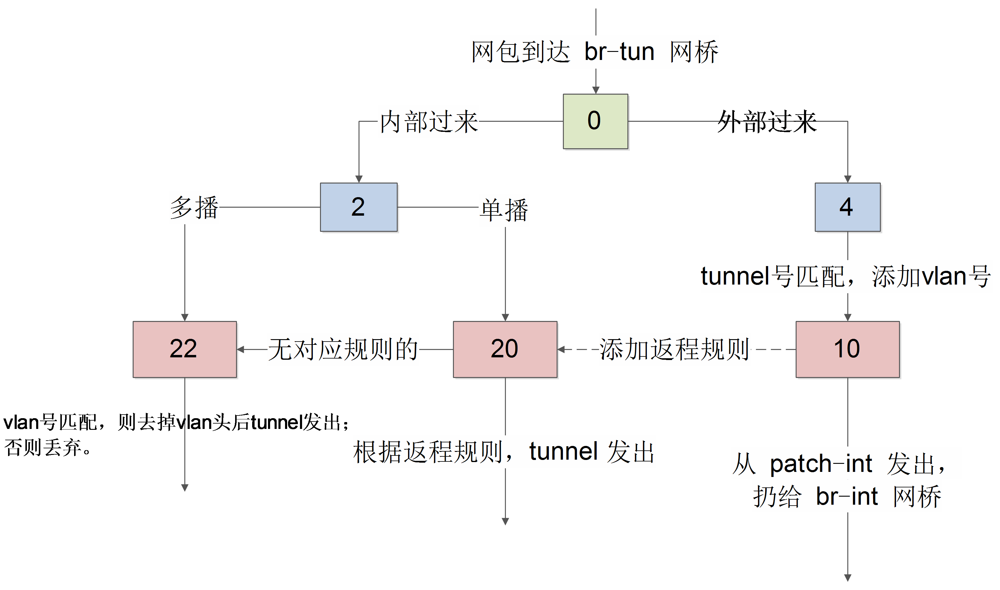

br-tun
br-tun 作为虚拟化层网桥，规则就要复杂一些。 要将内部过来的网包进行合理甄别，内部带着正确 vlan tag 过来的，从正确的 tunnel 扔出去；外面带着正确 tunnel 号过来的，要改到对应的内部 vlan tag 扔到里面。
Bridge br-tun
fail_mode: secure
Port "vxlan-0a00644d"
Interface "vxlan-0a00644d"
type: vxlan
options: {df_default="true", in_key=flow, local_ip="10.0.100.88", out_key=flow, remote_ip="10.0.100.77"}
Port patch-int
Interface patch-int
type: patch
options: {peer=patch-tun}
Port br-tun
Interface br-tun
type: internal
其中，端口 br-tun 是内部端口，vxlan-0a00644d 这样的端口是向其它节点发包时候的 VXLAN 隧道端点，patch-int 端口通过一条管道连接到 br-int 上的 patch-tun 端口。
正常情况下，虚拟机的流量经过 br-int 转发，经过 patch-tun 端口，抵达 patch-int 端口，从而到达 br-tun 网桥，该网桥根据自身规则将合适的网包经过 VXLAN 隧道送出去。
$ sudo ovs-ofctl dump-flows br-tun
NXST_FLOW reply (xid=0x4):
cookie=0x0, duration=329.194s, table=0, n_packets=31, n_bytes=2906, idle_age=29, priority=1,in_port=1 actions=resubmit(,2)
cookie=0x0, duration=325.847s, table=0, n_packets=14, n_bytes=1591, idle_age=33, priority=1,in_port=2 actions=resubmit(,4)
cookie=0x0, duration=328.954s, table=0, n_packets=6, n_bytes=480, idle_age=321, priority=0 actions=drop
cookie=0x0, duration=328.712s, table=2, n_packets=9, n_bytes=694, idle_age=33, priority=0,dl_dst=00:00:00:00:00:00/01:00:00:00:00:00 actions=resubmit(,20)
cookie=0x0, duration=328.465s, table=2, n_packets=22, n_bytes=2212, idle_age=29, priority=0,dl_dst=01:00:00:00:00:00/01:00:00:00:00:00 actions=resubmit(,22)
cookie=0x0, duration=328.223s, table=3, n_packets=0, n_bytes=0, idle_age=328, priority=0 actions=drop
cookie=0x0, duration=50.703s, table=4, n_packets=12, n_bytes=1451, idle_age=33, priority=1,tun_id=0x3e9 actions=mod_vlan_vid:1,resubmit(,10)
cookie=0x0, duration=327.979s, table=4, n_packets=2, n_bytes=140, idle_age=94, priority=0 actions=drop
cookie=0x0, duration=327.742s, table=10, n_packets=12, n_bytes=1451, idle_age=33, priority=1 actions=learn(table=20,hard_timeout=300,priority=1,NXM_OF_VLAN_TCI[0..11],NXM_OF_ETH_DST[]=NXM_OF_ETH_SRC[],load:0->NXM_OF_VLAN_TCI[],load:NXM_NX_TUN_ID[]->NXM_NX_TUN_ID[],output:NXM_OF_IN_PORT[]),output:1
cookie=0x0, duration=38.551s, table=20, n_packets=9, n_bytes=694, hard_timeout=300, idle_age=33, hard_age=33, priority=1,vlan_tci=0x0001/0x0fff,dl_dst=fa:16:3e:83:95:fa actions=load:0->NXM_OF_VLAN_TCI[],load:0x3e9->NXM_NX_TUN_ID[],output:2
cookie=0x0, duration=327.504s, table=20, n_packets=0, n_bytes=0, idle_age=327, priority=0 actions=resubmit(,22)
cookie=0x0, duration=50.94s, table=22, n_packets=11, n_bytes=1334, idle_age=29, dl_vlan=1 actions=strip_vlan,set_tunnel:0x3e9,output:2
cookie=0x0, duration=327.261s, table=22, n_packets=10, n_bytes=808, idle_age=51, priority=0 actions=drop
这些规则组成如下图所示的转发逻辑。

表 0
先看 table0 中的规则
cookie=0x0, duration=329.194s, table=0, n_packets=31, n_bytes=2906, idle_age=29, priority=1,in_port=1 actions=resubmit(,2)
cookie=0x0, duration=325.847s, table=0, n_packets=14, n_bytes=1591, idle_age=33, priority=1,in_port=2 actions=resubmit(,4)
cookie=0x0, duration=328.954s, table=0, n_packets=6, n_bytes=480, idle_age=321, priority=0 actions=drop
从 1 端口（patch-int）进来的网包，扔给表 2 处理，从 2 端口（vxlan-0a00644d）进来的网包，扔给表 4 处理。即一个处理来自内部 vm 的，一个处理来自外面的 vxlan 隧道的。
表 2
对于内部包，表 2 中规则为
cookie=0x0, duration=53316.397s, table=2, n_packets=0, n_bytes=0, idle_age=53316, priority=0,dl_dst=00:00:00:00:00:00/01:00:00:00:00:00 actions=resubmit(,20)
cookie=0x0, duration=53316.162s, table=2, n_packets=161, n_bytes=39562, idle_age=422, priority=0,dl_dst=01:00:00:00:00:00/01:00:00:00:00:00 actions=resubmit(,22)
即里面过来的单播包，扔给表 20 处理；多播和广播包，扔给表 22 处理。
表 3
丢弃所有包。
cookie=0x0, duration=328.223s, table=3, n_packets=0, n_bytes=0, idle_age=328, priority=0 actions=drop
表 4
对于外部来的数据，表 4 中规则为
cookie=0x0, duration=50.703s, table=4, n_packets=12, n_bytes=1451, idle_age=33, priority=1,tun_id=0x3e9 actions=mod_vlan_vid:1,resubmit(,10)
cookie=0x0, duration=327.979s, table=4, n_packets=2, n_bytes=140, idle_age=94, priority=0 actions=drop
匹配给定的 tunnel 号，添加对应的 vlan 号，扔给表 10 去学习一下后扔到 br-int 网桥。
表 10
cookie=0x0, duration=327.742s, table=10, n_packets=12, n_bytes=1451, idle_age=33, priority=1 actions=learn(table=20,hard_timeout=300,priority=1,NXM_OF_VLAN_TCI[0..11],NXM_OF_ETH_DST[]=NXM_OF_ETH_SRC[],load:0->NXM_OF_VLAN_TCI[],load:NXM_NX_TUN_ID[]->NXM_NX_TUN_ID[],output:NXM_OF_IN_PORT[]),output:1
主要作用是学习外部（从 tunnel）进来的包，往表 20 中添加对返程包的正常转发规则，并且从 patch-int 扔给 br-int。
使用了 openvswitch 的 learn 动作。该动作能根据处理的流来动态修改其它表中的规则。
具体来看 learn 规则。
table=20说明是修改表 20 中的规则，后面是添加的规则内容；NXM_OF_VLAN_TCI[0..11]，匹配跟当前流同样的 VLAN 头，其中 NXM 是 Nicira Extensible Match 的缩写；NXM_OF_ETH_DST[]=NXM_OF_ETH_SRC[]，包的目的 mac 跟当前流的源 mac 匹配；load:0->NXM_OF_VLAN_TCI[]，将 vlan 号改为 0；load:NXM_NX_TUN_ID[]->NXM_NX_TUN_ID[]，将 tunnel 号修改为当前的 tunnel 号；output:NXM_OF_IN_PORT[]，从当前入口发出。
表 20
cookie=0x0, duration=38.551s, table=20, n_packets=9, n_bytes=694, hard_timeout=300, idle_age=33, hard_age=33, priority=1,vlan_tci=0x0001/0x0fff,dl_dst=fa:16:3e:83:95:fa actions=load:0->NXM_OF_VLAN_TCI[],load:0x3e9->NXM_NX_TUN_ID[],output:2
cookie=0x0, duration=327.504s, table=20, n_packets=0, n_bytes=0, idle_age=327, priority=0 actions=resubmit(,22)
其中，第一条规则就是表 10 学习来的结果。对于 vlan 号为 1，目标 mac 是 fa:16:3e:83:95:fa（之前，我们从虚拟机内 ping 10.0.0.1，这个 mac 作为源 mac 从 tunnel 来过）的网包，去掉 vlan 号，添加当时的 vxlan 号，并从 tunnel 发出。
对于没学习到规则的网包，则扔给表 22 处理。
表 22
cookie=0x0, duration=50.94s, table=22, n_packets=11, n_bytes=1334, idle_age=29, dl_vlan=1 actions=strip_vlan,set_tunnel:0x3e9,output:2
cookie=0x0, duration=327.261s, table=22, n_packets=10, n_bytes=808, idle_age=51, priority=0 actions=drop
表 22 检查如果 vlan 号正确，则去掉 vlan 头后从 tunnel 扔出去。